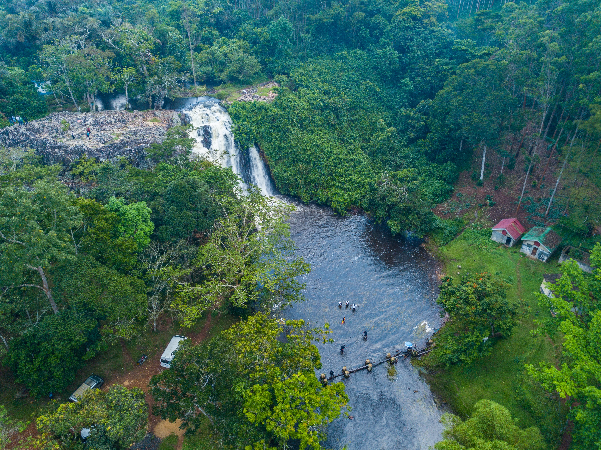

Sezibwa Falls asks to be understood on two levels at once. On one level, it is a beautiful natural site where water moves through greenery and rock with soothing force. On another, it is a place of story and spiritual significance, where local belief has shaped how people see the landscape for generations.
That dual identity is what makes Sezibwa more interesting than a simple waterfall stop. You do not just arrive, take in the scenery, and move on. The legends around the site change the mood of the visit. They make the falls feel inhabited by meaning, not only by water and trees.
For travelers near Kampala, this creates a rare experience: a destination that offers both natural freshness and cultural depth without requiring a long expedition.
Why Story Changes A Landscape
Once a place carries myth or sacred memory, it is no longer only visual. It becomes interpretive. Visitors begin noticing details differently, reading atmosphere as well as scenery, and that makes Sezibwa feel richer than many quick roadside attractions.
This is exactly why cultural landscapes remain some of the most rewarding travel experiences. They train you to look with more than one kind of attention.
A Good Stop For Slower Travel
Sezibwa suits travelers who enjoy moving at a reflective pace. Walk a little. Listen to the water. Let the stories settle. It is a place that improves when treated gently rather than hurried through.
That makes it especially valuable in an itinerary heavy with road movement or urban stops.
Why Sezibwa Stays With People
What lingers after a visit is usually not only the waterfall itself, but the feeling that the site holds layers. Water gave it shape. Community gave it meaning. Together they turn a small destination into something much more memorable than its size suggests.
For readers seeking places where scenery and belief meet, Sezibwa Falls is one of Uganda's most intriguing short detours.